ProbarPlayground
Escribe un mensaje, elige agente, modelo y esfuerzo, y mira la respuesta antes de llevarla a tu app.Type a message, pick agent, model and effort, and see the response before taking it to your app.
Cómo funcionaHow it works
- 1. Tu mensajeYour messageCon archivos si quieres: PDF, Word, PowerPoint, Excel, HTML o texto.With files if you like: PDF, Word, PowerPoint, Excel, HTML or text.
- 2. El agenteThe agentEl que elijas, con su modelo y esfuerzo; si falla, el respaldo.The one you pick, with its model and effort; if it fails, the fallback.
- 3. La respuestaThe responseEn vivo, con formato o como texto, y su registro con tiempos.Live, formatted or as plain text, with its timed log.
Paso a pasoStep by step
- Escribe el mensaje y, si quieres, adjunta archivos.Type the message and, if you like, attach files.
- Elige agente, modelo y esfuerzo; si no eliges, se usan los predeterminados de Ajustes.Pick agent, model and effort; if you don’t, the defaults from Settings are used.
- Mira la respuesta en vivo. «Registro» muestra cada paso y cuánto tardó.Watch the response live. “Log” shows every step and how long it took.
- Cuando funcione, «Guardar como API» la convierte en una API para tu app.When it works, “Save as API” turns it into an API for your app.
Qué verás en pantallaWhat you will see on screen
- La recetaThe recipe Aquí eliges agente y modelo y, si quieres, instrucciones, esfuerzo y respaldo. Es lo que define cómo responde una API cuando la guardas.Here you pick agent and model and, if you want, instructions, effort and fallback. It defines how an API answers once you save it.
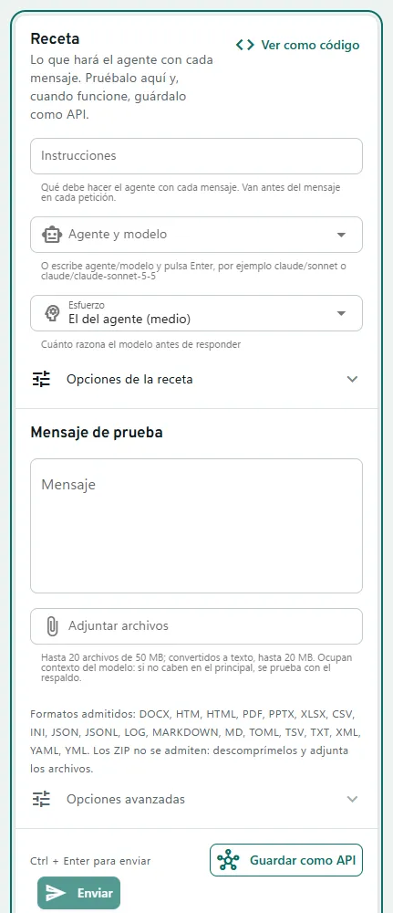
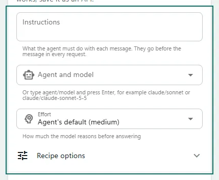
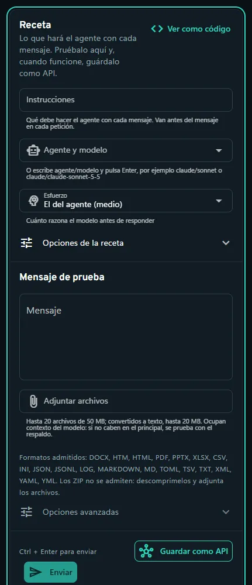
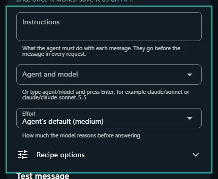
- El mensaje de pruebaThe test message Aquí escribes el mensaje y lo envías con Ctrl + Enter. La respuesta aparece en vivo en el panel de respuesta.Type the message here and send it with Ctrl + Enter. The response shows up live in the response panel.
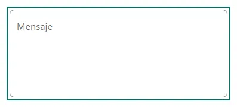
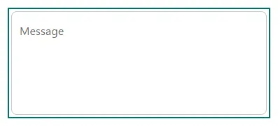
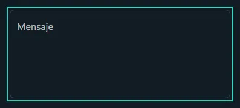
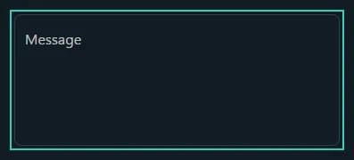
- Ver como códigoView as code Este botón convierte lo que has preparado en una petición lista para copiar y pegar en tu app.This button turns what you set up into a request ready to copy and paste into your app.
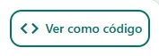
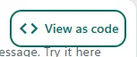
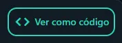
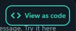
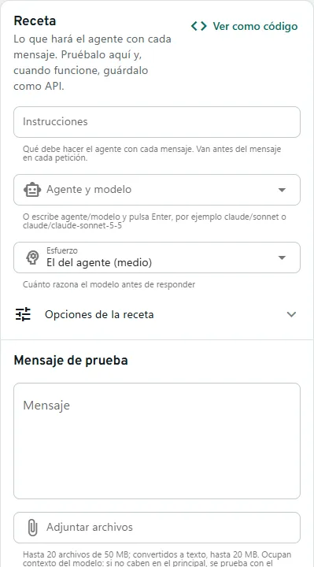
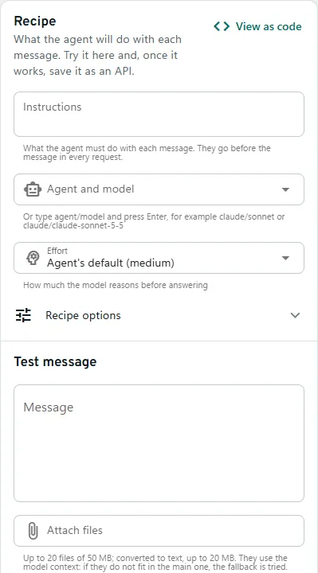
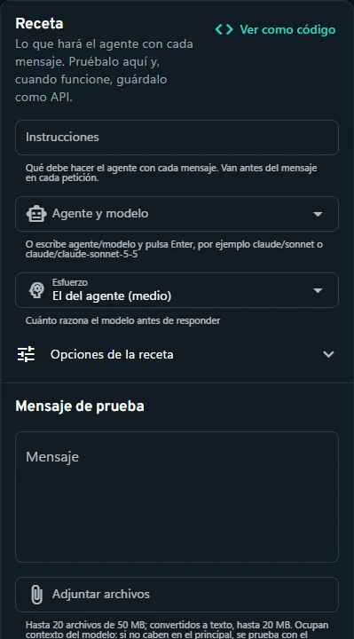
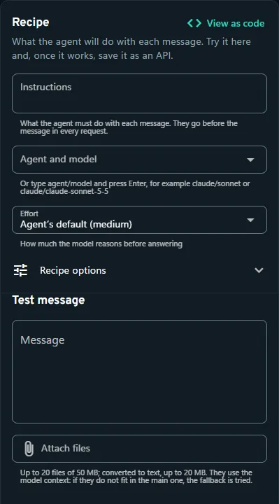
PreguntasQuestions
¿Cómo veo mi prueba como código?How do I see my test as code?
Pulsa «Ver como código» en la receta: la petición en curl, Python, Node o Go, lista para tu app, con la clave como <tu clave>.Click “View as code” in the recipe: the request in curl, Python, Node or Go, ready for your app, with the key as <your key>.
¿Dónde quedan mis pruebas?Where are my tests kept?
En «Pruebas recientes», para abrirlas o usarlas de nuevo. El Historial guarda todas las peticiones.In “Recent tests”, to open them or use them again. History keeps every request.
¿Qué esfuerzo elijo?Which effort should I pick?
Más esfuerzo da mejores respuestas difíciles, pero tarda más y gasta más tokens. Para lo simple basta con bajo o medio.More effort gives better responses to hard questions, but takes longer and uses more tokens. For simple things, low or medium is enough.
En la terminal: 3 abre Probar. Enter edita un campo de la receta, Ctrl+S envía el mensaje y c cancela la petición; k enseña el código y g guarda la prueba como API.In the terminal: 3 opens the Playground. Enter edits a recipe field, Ctrl+S sends the message and c cancels the request; k shows the code and g saves the test as an API.